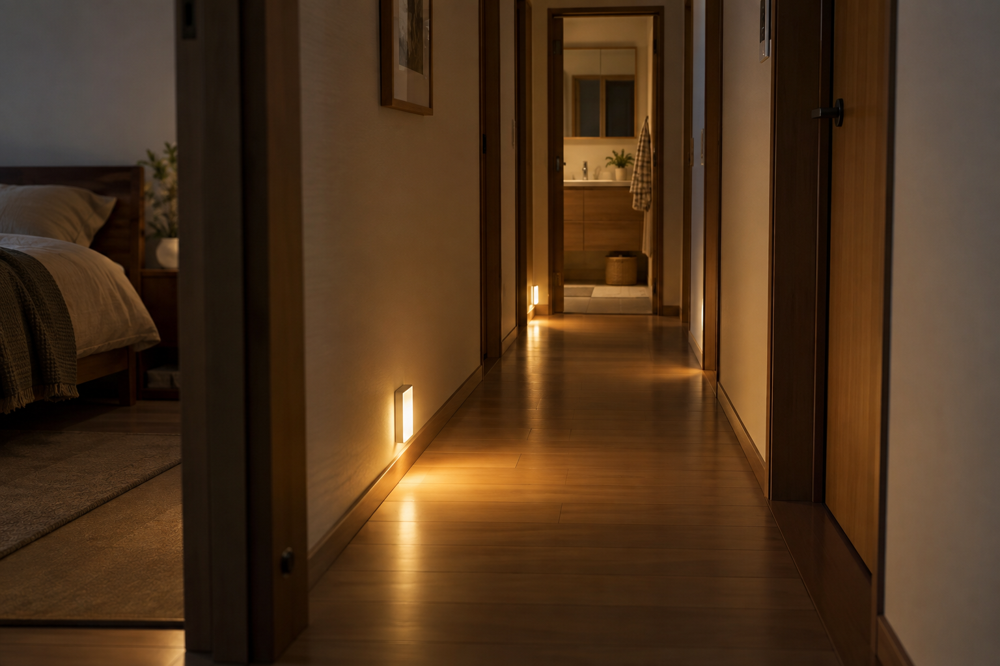

バリアフリーは、いつから考えるものだと思いますか。私が現場で感じてきたのは、必要になってから慌てて整えたご家庭ほど、使い方や動線の調整に苦労することがある、ということです。これは事故件数を比較した統計ではなく、私自身の実感です。
手すりも、取り付けたその日から自然に使いこなせるとは限りません。元気なうちに、使う人と一緒に位置や動作を確かめておく意味があります。50代は、自分たちのこれからに加え、介護のために親を迎える可能性も考えたい時期。まだ困っていない今だから、落ち着いて相談できます。
必要になって慌てる前に、本人の動作に合う手すりや通路を確認。小さな段差、設置後の失敗、照明、介護保険の住宅改修まで具体的に考えます。
公開日：未定
バリアフリー・介護への備え 文｜エイスケ（住宅と教育の専門家）
文｜エイスケ（住宅と教育の専門家）
バリアフリーは、いつから考えるものだと思いますか。私が現場で感じてきたのは、必要になってから慌てて整えたご家庭ほど、使い方や動線の調整に苦労することがある、ということです。これは事故件数を比較した統計ではなく、私自身の実感です。
手すりも、取り付けたその日から自然に使いこなせるとは限りません。元気なうちに、使う人と一緒に位置や動作を確かめておく意味があります。50代は、自分たちのこれからに加え、介護のために親を迎える可能性も考えたい時期。まだ困っていない今だから、落ち着いて相談できます。
まず確認したいのは、玄関で靴を脱ぐ、椅子から立つ、トイレへ行く、浴槽をまたぐという普段の動きです。見た目の段差が少なくても、つかまれる物が遠い、扉を開けた先が狭いという不便は残ります。
親との同居を考えているなら、使う本人にも「どこで不安を感じるか」を聞きましょう。家族が良かれと思う位置と、本人の握りやすい位置は違うことがあります。必要に応じてケアマネジャーやリハビリの専門職、施工店にも一緒に確認してもらいます。
すでに床の段差が少ない家なら、手すりや照明の小さな改修が役立つ場合もあります。費用対効果は住まいごとに違うので、「どの家でも手すりが一番」とは決めず、困る動作に費用を使う考え方です。
手すりの高さや形だけでなく、壁からどれだけ出るか、端部に衣服が引っかからないか、扉や収納の開閉を邪魔しないかを確認します。車椅子や歩行器を使うなら、直線で通れる幅だけでなく、曲がる場所と介助者の立つ場所も必要です。[1]
| 見落としやすい場面 | 工事前後に確かめること |
|---|---|
| 廊下に手すりを追加 | 取り付け後の有効幅、曲がり角、車椅子や介助者の動き |
| 玄関やトイレの扉の近く | 扉を開けた状態でも握れるか、人がよけずに使えるか |
| 浴槽の出入り | 本人の動作、浴槽の形、壁の下地に合っているか |
| 設置後にがたつく | 使い続けず、施工店やメーカーへ連絡する |
これは工事の確認例です。実際の事故例として、LIXILは取付ナットが緩んだ浴室手すりをそのまま使い、外れて転倒・負傷した事例を紹介しています。[2] 「付いているから安心」で終わらず、その後の状態も見る必要があります。
階段のように目立つ段差だけが問題ではありません。部屋の境目の敷居、床材の切り替わり、厚手のラグ、床に置いたコードなど、小さく見落としやすい変化も確認したい場所です。[1]
「1センチ程度なら平気」とは考えず、本人の歩き方や使う道具に合わせて見ます。ただ、小さい段差の方が大きい段差より必ず危険、という単純な比較ではありません。
段差を埋める部材にも、ずれや勾配、扉との干渉があります。とりあえず板を置くのではなく、床の高さをそろえる工事、敷居の処理、建具の変更などを施工店と比較しましょう。工事をしない段階でも、動線上の物やコードを片づけることは始められます。
寝室からトイレまで、照明をつけるために暗い場所を歩いていませんか。夜の安全は、明るい電球に替えるだけでは整わないことがあります。起きた場所から操作できるスイッチ、床面が分かる足元灯、通路に影をつくらない配置を考えます。[3]
人感センサーは便利ですが、検知する向きや消灯までの時間が合わないと、立ち止まった時に暗くなる場合があります。手動で操作する方法も残しましょう。停電時に使える明かりの場所を共有し、配線工事は専門業者へ。確かめるために暗闇を無理に歩く必要はありません。

親を迎えるなら、移動のしやすさに加えて冬の入浴環境も確認したいところです。ヒートショックという言葉を聞いたことがある方も多いでしょう。消費者庁は、入浴前に脱衣所や浴室を暖めるなど、入浴事故への注意を呼びかけています。[4]
浴室暖房だけでなく、脱衣所や窓、家全体の断熱との組み合わせも検討します。濡れる場所に使える機器か、電源や設置条件は適切かを専門家へ確認してください。ここでは備えの入口までとし、温熱環境の詳しい話は別の回で扱います。
介護保険の住宅改修には、手すりの取り付けや段差の解消などが含まれます。対象者や工事、申請には条件があり、厚生労働省は工事の前後に自治体へ申請する流れを案内しています。[5] 50歳だから自動的に使える制度ではありません。
親の転居に伴う工事なら、どの住まいで、誰が利用するかも含め、市区町村やケアマネジャーに先に相談しましょう。自治体独自の助成がある場合も、募集期間や予算、工事前の申請などを確認します。
私が勧めたいのは、危険をあおってすぐ工事することではなく、使う人と元気なうちに相談することです。手すり、段差、明かりを別々の商品の話にせず、暮らしの動きとして整えていきましょう。
年齢だけで決めず、本人の動作や親との同居への備えを確認する時期と考えます。
立つ・座る・移動する動作を本人と専門家が確かめ、下地や通路も見ます。
見落としやすい敷居やラグも確認します。大きさだけでは判断できません。
検知や消灯時間が生活に合うか確認し、手動操作や停電時の明かりも残します。
使用を中止し、施工店やメーカーへ連絡してください。
事前申請が必要な制度があります。契約や着工前に窓口へ確認します。
資料確認：2026年9月27〜28日。体験談・筆者の提案・出典による情報を区別しています。
この記事を書いた人｜エイスケ
1986年生まれ。実家の工務店・不動産に10年間従事したのち、教育の世界へ。住宅と教育、両方の視点から「豊かな暮らし」をテーマに執筆します。※本コラムは筆者個人の見解・経験に基づくものです。最終的な判断は各分野の専門家にご相談ください。